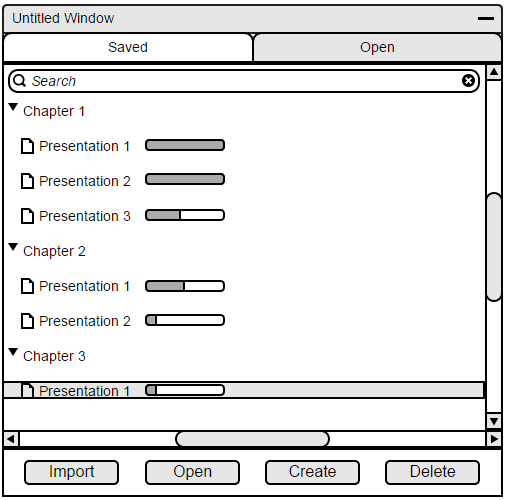

2.2.3. Importing a Lecture From an External Source
The tool will allow instructors to create presentations in raw HTML and import the file into the program. Students will also be able to download lectures externally and be able to import them into their tool. The importing process will be handled by the file manager.
In order to import a presentation, the user will navigate to the file manager and press the import button on the bottom left as shown below in Figure 1.

Figure 22: The File Manager
When the user presses the import button, the program will display a file navigator, shown in Figure 23. This is where the user can navigate through their local files and choose a presentation to import.
Figure 23: Selecting a local file
When the user selects the file to be imported, the system will display a prompt shown in Figure 24. The user will choose whether to import into a new or existing file. The existing file selection will be a pulldown, while the new folder will be named by the user.
Figure 24: Import to new or existing folder
When imported, the new file will appear under the selected folder from the import prompt as shown in Figure 25.
Figure 25: After importing
Prev: Inserting lecture elements
| Next: Lecture format
| Up: Lecture notes
| Top: index